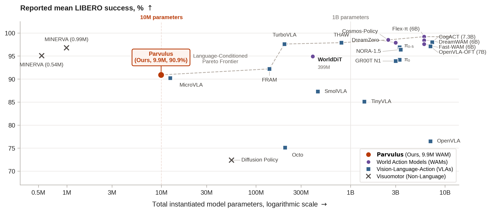
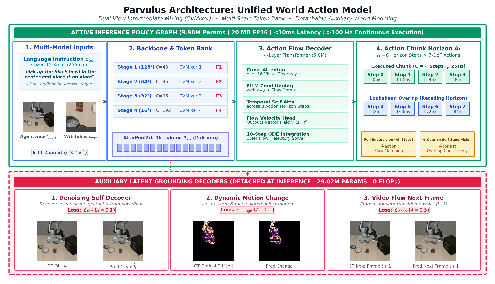

Vision-based robot manipulation increasingly relies on multi-billion parameter Vision-Language-Action (VLA) models and World Action Models (WAMs). However, standard imitation learning utilizes network capacity inefficiently, relying on parameter scaling to compensate for missing physical inductive biases. In this work, we show that latent physical grounding and structured data engineering significantly improve policy representation learning. Auxiliary generative decoders ground internal representations in spatial geometry and physical dynamics during training, then detach entirely at inference. Trained from scratch on the modest LIBERO demonstration corpus, our 9.9M parameter policy, Parvulus, achieves a 90–92% success rate at >100 Hz (<10 ms latency). By matching models over 100× larger, Parvulus advances the Pareto frontier of parameter efficiency among language-conditioned policies. These findings demonstrate that latent physical grounding provides a far more efficient foundation for physical reasoning than uninformed parameter scaling.
Parvulus matches or exceeds multi-billion parameter architectures (3B–7B VLAs and WAMs) on the canonical 40-task LIBERO benchmark while demanding a fraction of the compute and memory footprint.

| Benchmark Suite | Canonical Tasks | Physical Rollouts | Success Rate |
|---|---|---|---|
| LIBERO-Spatial | 10 | 1,500 | 92.67% |
| LIBERO-Object | 10 | 1,500 | 91.13% |
| LIBERO-Goal | 10 | 1,500 | 89.47% |
| LIBERO-10 (Long-Horizon) | 10 | 1,500 | 90.27% |
| Full LIBERO-40 Benchmark | 40 | 6,000 | 90.88% ± 0.37% |
Rather than relying on massive parameter scaling to absorb physics incidentally, Parvulus trains under multi-task auxiliary generative objectives that detach entirely at inference.

Isolates coordinated motion between the robot end-effector and manipulated target objects, discouraging shortcut representations based on static background artifacts.
Enforces temporal and physical causality by predicting imagined next observation frames, equipping the latent representation with predictive world-model dynamics.
Auxiliary decoders detach completely once training converges. The deployed policy retains full physical grounding with only 9.98M active parameters.
Parvulus supports multiple execution runtimes tailored from embedded edge robotics to high-throughput cloud evaluation.
7.28 ms / chunk (>1,000 Hz action bandwidth). Standalone dependency-free engine natively conditioned on 256-dim continuous task vectors via cuBLAS and fused kernels.
38.8 ms / chunk (206 Hz action bandwidth). Turnkey Python interface with receding horizon action chunking and multi-worker asynchronous stepping.
106.6 ms / chunk. Heterogeneous execution executing DualView vision encoding on integrated graphics (torch.xpu) and ODE flow matching on CPU.
Get started with Parvulus in just a few lines of Python:
import numpy as np
from PIL import Image
from infer import ParvulusInference
# Initialize client (auto-detects CUDA / XPU / CPU; enables fast KV-cache)
infer = ParvulusInference.from_pretrained(
"aasivas/Parvulus",
device="cuda", # Options: 'cuda', 'cpu', 'xpu', 'hybrid', or 'auto'
use_kv_cache=True,
)
# Predict 8-step continuous action chunk [8, 7]
action_chunk = infer.predict_chunk(
agentview_image=agentview_frame,
wristview_image=wristview_frame,
task_description="grasp the black bowl and place it on the plate"
)If you find Parvulus useful for your research or applications, please cite our paper:
@inproceedings{sivas2026parvulus,
title = {Parvulus: A 10M-Scale World Action Model for Robot Manipulation},
author = {Abdullah Ali Sivas and Peter Cho-Ho Lam and Zirui Zhou and Yong Zhang},
booktitle = {CoRL 2026 Workshop on The Action Gap: Large Generative Models Learn Rich Knowledge},
year = {2026},
url = {https://openreview.net/forum?id=VcS0dE1Aoz}
}